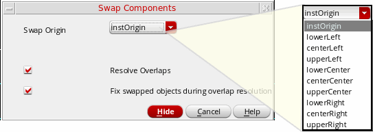

Assisted Placement of Devices
Assisted placement refers to the manual adjustments done to placed device instances after running Virtuoso Placer. Assisted placement is generally done to improve device placement as per your design requirements.
Assisted placement commands are available in the Place menu. These commands support transparent group mode, in which you can edit individual members of user-defined groups.
Guidelines for running the assisted placement commands are:
- Start with assisted move to group devices with similar masters and similar finger lengths. No device should be adjacent to another dissimilar device.
- Ensure that the devices are ordered top to bottom in a manner that maintains the path of the current from the power rail to the ground rail.
- After you have grouped devices by type, run the required assisted placement commands to improve placement.
-
Press
Ctrl+Dto deselect all devices, and then carefully select only the ones you need before running an assisted placement command.
The following assisted placement commands are available in the Place menu:
Swapping Instances
Use the Swap Instances assisted placement command to swap positions of the selected instances, chains, or figGroups.
- Choose Place—Swap Instances.
- Click the first instance to be swapped.
-
Click the second instance.
-
Press
F3to display the Swap Components form.
 - Select a position from the Swap Origin list to specify the position to which the instance needs to be moved. This option is useful when there is a difference in the sizes of the instances to be swapped.
- Select Resolve Overlaps to automatically resolve overlaps while placing the devices at their new locations.
- Select Fix swapped objects during overlap resolution to ensure that the position of the swapped device is not changed while resolving overlaps.
- Click Hide to run the command on the selected instances.
The locations of the selected instances are switched, but their orientations are retained as in their initial position.
Support for Transparent Group Mode
The assisted placement options support the transparent group mode. In this mode, you can select and edit individual members of user-defined groups at the top-level, while retaining them as members of their respective groups. You can edit objects in nested groups also at the top-level, without performing multiple Edit In Place operations. With Resolve Overlaps selected, the user-defined group instances that are at the same level as the selected member instance interact as individual members. Other groups, which are at the same or different levels, behave as groups.
Related Topics
Setting the Assisted Placement Options in the Placement Options Form
Setting Automatic Placement Options in the Placement Options Form
Return to top